La Era Bad Bunny: Transformación Musical y Cultural
Más que un cantante, Bad Bunny se ha convertido en uno de los artistas más influyentes del siglo XXI. Su carrera ha transformado la música latina y ha impulsado cambios culturales y sociales que han trascendido las fronteras de Puerto Rico y de América Latina.
Por Isabela Buzato
30/07/2026 Atualizado às 18h00
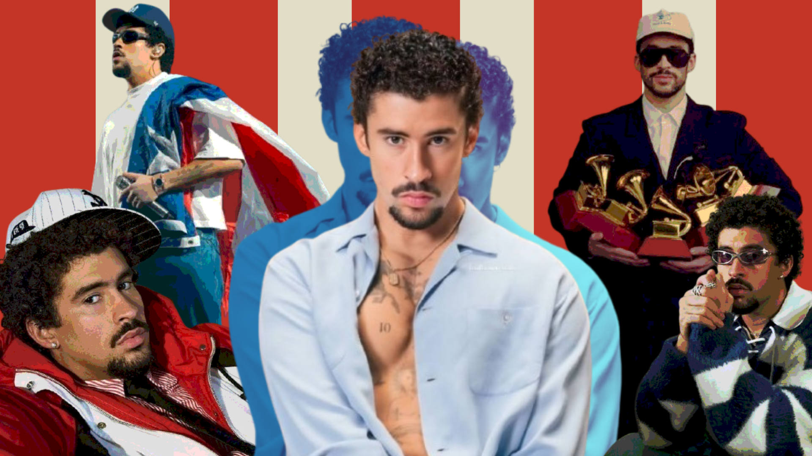
Introducción
Bad Bunny es un cantante de trap, reguetón, salsa y muchos otros estilos musicales. El cantante más escuchado del mundo en 2025, el puertorriqueño actualmente tiene 7 álbumes de estudio solo y 1 álbum colaborativo con el cantante J Balvin y ha estado dominando la internet y la escena musical mundial durante los últimos años.
Más que solamente la música, el artista ganó reconocimiento por su auténtica personalidad y por todo que lucha y que representa, principalmente para los latinoamericanos.
Este reportaje busca explicar todo el contexto cultural, social y el impacto del conejito malo para decir que la era actual es de Bad Bunny y simplemente vivimos en ella.
Los orígenes
Benito Antonio Martínez Ocasio nació el día 10 de marzo de 1994, en Bayamón, municipio del Estado Libre Asociado de Puerto Rico. Con padre camionero y madre profesora, Benito creció muy cerca de sus abuelos y tíos en un ambiente simple, pero cercado de amor y mucha música.
En su infancia, encantabase con la colección de CDs de su madre, que, además de borrar sus discos, también le llevó para cantar en él coral de la iglesia. Fue de esta infancia también que le vino el nombre artístico “Bad Bunny”, de una foto donde Benito estaba disfrazado de conejo y con una expresión de enojo.
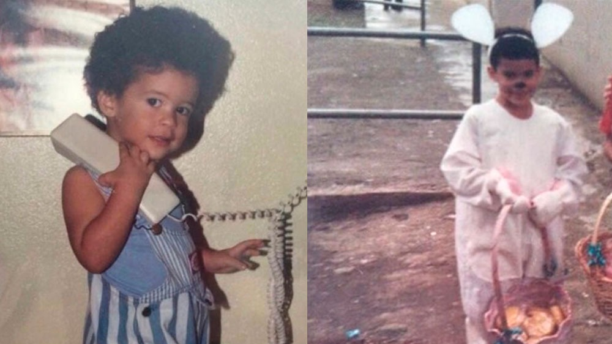
Cuando era niño le gustaba imitar famosos cantantes de salsa, pero cuando la edad llegó, tuve que trabajar como cajero y empaquetador de supermercado mientras estudiaba comunicación audiovisual en la universidad.
Su historia empezó a cambiar en 2016, época en la que comenzó a publicar canciones independientes en SoundCloud. La canción “Diles” llamó la atención de productores, Bad Bunny entonces conoció a un empresario y lanzó su primer álbum “X 100PRE” en 2018, que ganó el Latin Grammy de Mejor Álbum de Música Urbana. Un hecho importante acá es que desde él inició su foco no fuera buscar grabadoras, sino construir una carrera independiente, con singles y videos en YouTube.
Dominación de la industria musical
Bunny empezó su trayectoria no solo cantando, sino revolucionando el trap latino, que, mezclado al reguetón, dominaba sus discos.
Esta mezcla de géneros es una de las cosas más auténticas y llamativas del cantante, que siempre ha venerado los estilos latinos más diversos y ha puesto su propia identidad dentro de ellos.
Reconocimiento en América Latina
Aunque actualmente su nombre sea reconocido mundialmente, Bad Bunny recorrió un gran camino hasta conquistar el mundo. Luego enumeramos los principales éxitos latinoamericanos del artista.
2017 – Soy Peor
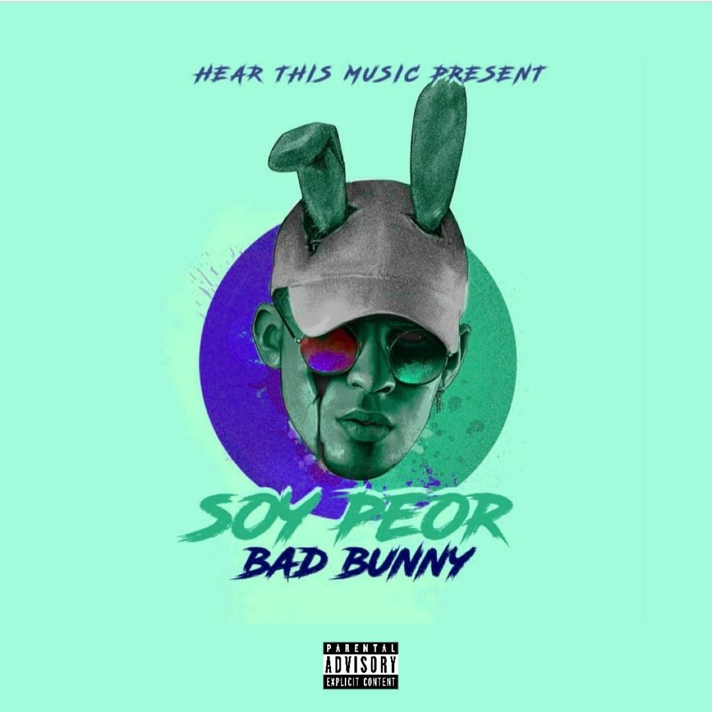
- La canción "Soy Peor" se convirtió en uno de los himnos que popularizaron el trap latino en Puerto Rico y el resto de América Latina.
- Marcó el inicio de su reconocimiento masivo en la región y consolidó a Bad Bunny como una de las nuevas figuras del movimiento urbano.
2018 – X 100PRE
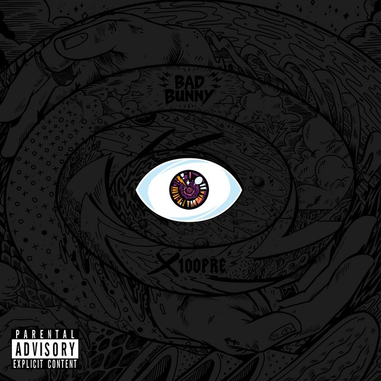
- Debutó en el No. 1 de Billboard Top Latin Albums.
- Ganó el Latin Grammy de Mejor Álbum de Música Urbana
- Fue certificado 11× Platino (Latino) por la RIAA.
2019 – OASIS (con J Balvin)
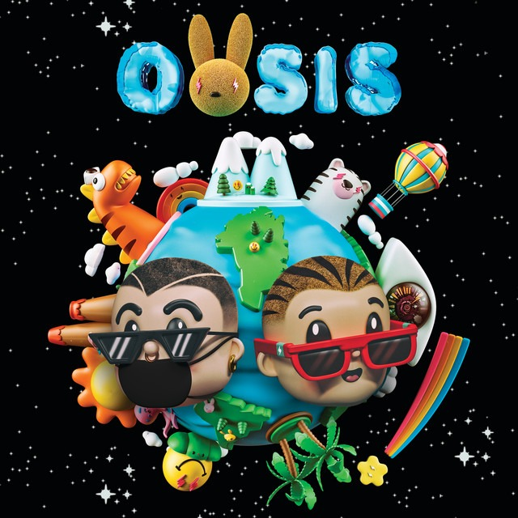
- Alcanzó el No. 1 en Billboard Top Latin Albums.
- Entró al Top 10 en múltiples mercados latinoamericanos;
- Confirmó a Bad Bunny y J Balvin como los artistas urbanos más influyentes de la región.
YHLQMDLG
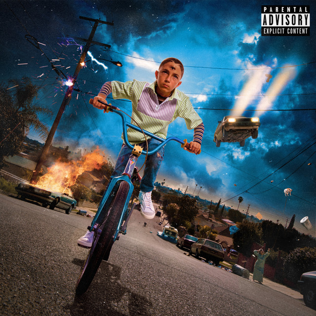
- Lanzado el 29 de febrero de 2020.
- Debutó en el No. 2 del Billboard 200, el mejor debut para un álbum completamente en español en ese momento;
- Alcanzó el No. 1 de Billboard Top Latin Albums;
- Permaneció 70 semanas consecutivas en el No. 1, estableciendo el récord de permanencia más largo en la historia del chart.
El Último Tour del Mundo

- Lanzado el 27 de noviembre de 2020.
- Se convirtió en el primer álbum completamente en español en alcanzar el No. 1 del Billboard 200.
- Reforzó el impacto internacional de la música latina sin abandonar el idioma español.
Los datos muestran la creciente que él ha conseguido durante los años en todo un continente. Más allá de las listas, dominó Spotify latinoamericano con sus canciones y en 2020 tuvo un hecho histórico: se convirtió en el artista más escuchado globalmente en la plataforma, el primer latino a hacerlo.
Su impacto se demostró gigante hasta fuera de lo digital, obteniendo un récord histórico de giras en América Latina. En 2022, con la “World’s Hottest Tour" recaudó más de US$435 millones, convirtiéndose en la gira látina más taquillera de la historia hasta aquel momento.
Se tornó también un figura central de la Academia Latina del Grammy, hasta finales de 2024 había obtenido 17 Latin Grammy y más de 50 nominaciones.

Dominación Global
El año de 2020 fue un gran divisor de aguas para su carrera internacional. Ahora él tenía el título de artista más escuchado del mundo y todos esperaban sus próximos pasos.
Fue así que una vez más él se probó como uno de los principales artistas de la generación.
2022 – Un Verano Sin Ti

- Lanzado el 6 de mayo de 2022;
- Permaneció 13 semanas en el No. 1 del Billboard 200;
- Se convirtió en el álbum más reproducido del mundo en Spotify durante 2022;
- Fue el primer álbum íntegramente en español nominado al Grammy a Álbum del Año en el siglo XXI;
- Es el álbum más escuchado de la historia de Spotify hasta hoy.
UVST es considerado uno de los álbumes latinos más exitosos de todos los tiempos y consolidó a Bad Bunny como una estrella global. En 2023, hizo historia (otra vez) como el primer artista latino en ser headliner de Coachella, el mayor festival de música de EE.UU. Esta presentación es considerada hasta hoy como uno de los momentos más importantes de la representación latina en la música global.
Él récord de artista más escuchado del mundo se mantuvo por dos años consecutivos más, y en 2023, lanzó el disco “nadie sabe lo que vá a pasar mañana”, que, mientras no tuvo el mismo impacto de su predecesor, hizo grandes números comerciales.
2025 – DeBí TiRaR MáS FOToS

Sin duda, el más reciente álbum de Bad Bunny es aquel que lo lleva a un nivel superior.
Con 17 canciones, siendo cuatro de ellas colaboraciones con artistas también de Puerto Rico, DTMF fue ampliamente reconocido por la crítica mundial.
El disco incorpora géneros tradicionales puertorriqueños como la plena, la bomba y la salsa dentro de una propuesta contemporánea.
Todos los aspectos del álbum son rodeados de refere ncias y homenajes a la tierra natal de Benito, desde la capa icónica, los clips de música, hasta el mascote de la era llamado “Concho”, inspirado en una especie endémica de rana de Puerto Rico en peligro de extinción.
Por todas estas razones, es considerado el trabajo más personal y culturalmente importante de su carrera, manteniendo su compromiso con la escena musical local y llevándola por todo el mundo.
El álbum es el más reconocido en términos de premiaciones, con 3 Grammy y 5 Latin Grammy. Uno de los Grammy también hizo parte de un hecho histórico, fue el primer Grammy al Álbum del Año para un disco íntegramente en español, consolidando el proyecto como la obra más importante y trascendente de la carrera de Bad Bunny.
La gira “DTMF World Tour” recreó elementos icónicos de Puerto Rico y fue diseñada para mostrar que un espectáculo en español podía liderar la industria global del entretenimiento. El espectáculo combinó canciones del nuevo álbum con algunos de sus mayores éxitos, con un repertorio que recorría toda su carrera y en distintas fechas participaron artistas invitados, especialmente figuras del reguetón puertorriqueño. Todo fue planeado como la Al total, fueron 55 conciertos con más de 3,08 millones de entradas vendidas y 467,5 millones de dólares de recaudación.
Esta gira consolidó a Bad Bunny como un fenómeno global no solo por sus cifras de taquilla, sino porque demostró que un artista latino podía llenar estadios en cuatro continentes sin abandonar su idioma ni su identidad cultural. En lugar de adaptar su espectáculo al mercado internacional, llevó la cultura puertorriqueña al centro del escenario mundial, convirtiendo la gira en una celebración de la memoria, las raíces y el orgullo latino.
Colaboraciones y grandes marcas
Todo el éxito musical atrajó miradas de fuera de la escena musical. No es nada nuevo que le guste a las grandes marcas hacer colaboraciones con personas famosas y nombres del momento, pero él da un paso a más.
A lo largo de su carrera, Bad Bunny ha construido colaboraciones con marcas de distintos sectores, desde la moda hasta la alimentación y las bebidas. Marcas importantes como Jacquemus, Gucci, Louis Vuitton, Zara, Cheetos, Corona y Crocs tuvieron al cantante como parcero, pero las campañas más destacadas fueron con Adidas y Calvin Klein.
Adidas
La colaboración empezó en 2021 con una colección de zapatillas, con cuatro reinterpretaciones de lo clásico modelo Forum. En el año siguiente, fueron lanzados nuevos colorways de estas mismas zapatillas. En 2023 y 2024, más tenis fueron redibujados con detalles exclusivos del artista, como doble lengüeta y acabados premium.
Todas las campañas relacionadas a estos lanzamientos estaban centradas en la creatividad, la individualidad y conexión con Puerto Rico, teniendo Bad Bunny participativo activamente en el diseño y narrativas.
En 2025, fue lanzada la Bad Bunny Ballerina, silueta nueva inspirada en el modelo adidas Taekwondo. Esta zapatilla fue concebida como un homenaje al baile, la música y la cultura puertorriqueña, celebrando la evolución artística de Benito sin perder de vista sus raíces. También en este año Adidas continuó celebrando Puerto Rico con la nueva Gazelle City Series inspirada en tres locaciones emblemáticas del país: El Yunque, Santurce y Cabo Rojo. Cada color representaba un paisaje o región de la isla, en lo que Adidas llamó de “carta de amor” a Puerto Rico.
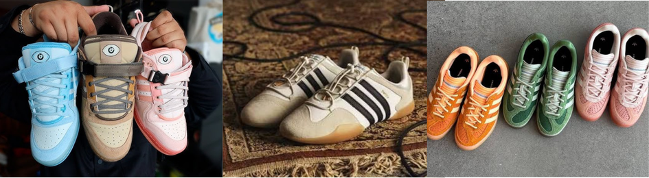
Además, presentó la Adiracer GT, inspirada en el automovilismo, junto con una colección desarrollada en colaboración con el fequipo Mercedes-AMG PETRONAS Formula One Team, ampliando el alcance creativo de la alianza hacia el mundo del motorsport.
Ahora en 2026, Benito se centró como la figura artística más importante de la marca con el lanzamiento de la colección BadBo 1.0. La colección incluyó la signatura exclusiva (signature shoe) BadBo 1.0, creada exclusivamente para él dentro de Adidas, junto con un logotipo propio inspirado en la estrella de la bandera de Puerto Rico y una línea completa de ropas, con chaquetas, pantalones y gorras.
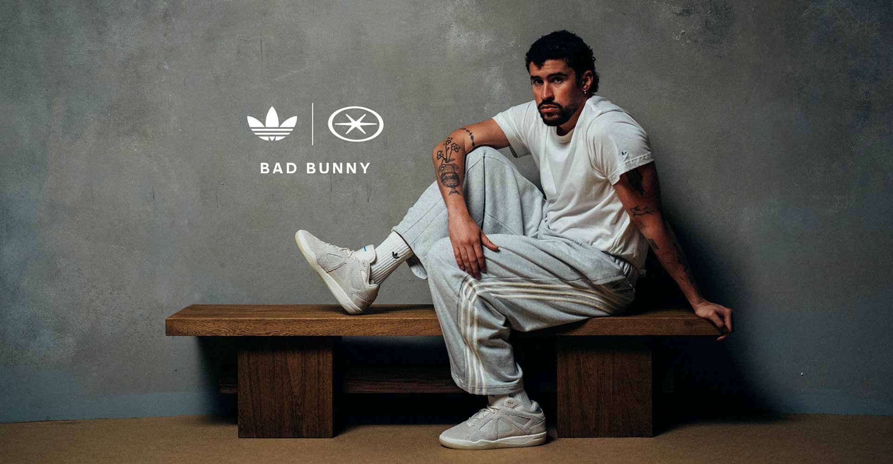
Esa colaboración descarta las reinterpretaciones y cría un producto completamente original, reconocimiento reservado para muchos pocos nombres dentro de Adidas, exaltando aún más el artista como uno de los nombres más influyentes del mercado.
Calvin Klein
En 2025, Bad Bunny también protagonizó la campaña mundial de Calvin Klein Underwear, uno de los pocos hombres latinos a liderar una campaña mundial de la marca.
La campaña tuve una enorme repercusión por muchas razones, dentro de ellas: representó un cambio en los estandartes de belleza dentro del lujo estadounidense, colocó un artista latino como centro de una de las campañas de moda más visibles del año y mantuvo su identidad puertorriqueña sin modificar su imagen para ajustarse a los códigos tradicionales de la indústria. Muchos videos de divulgación de la campaña incluían la música “EoO” del álbum DTMF, uniendo los aspectos musicales y de moda que acercan Bad Bunny.
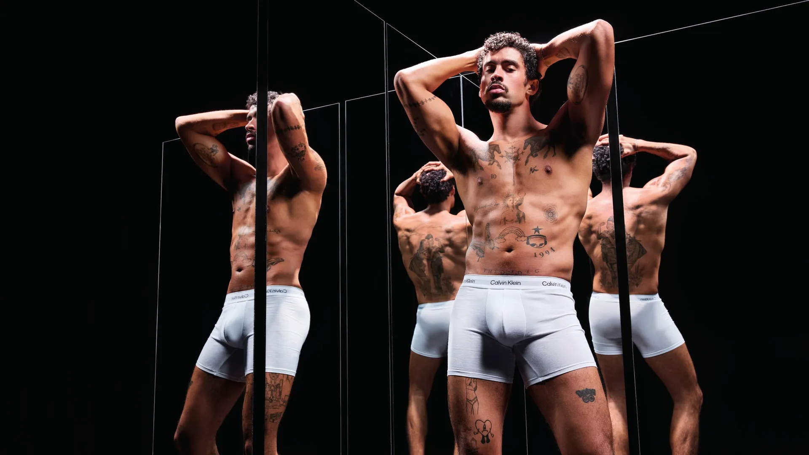
En conclusión, la campaña fue celebrada porque amplió la representación latina en el sector del lujo y de la moda internacional. Además, Bad Bunny rompió con los estereotipos clásicos de masculinidad al proyectar una imagen segura, expresiva y alejada de los modelos masculinos tradicionales que Calvin Klein había utilizado durante décadas.
Met Gala
El cantante no deja dudas sobre su influencia hasta en el mundo de la moda con sus participaciones icónicas en el Met Gala, una celebración benéfica anual que se fundó en 1948. El Met se trata de un evento que tiene por objetivo recaudar fondos para el Costume Institute del Museo Metropolitano de Arte y siempre tiene mucha repercusión debido la alfombra roja en que desfilan todos los invitados cuidadosamente seleccionados por Ana Wintour, la actual directora de Vogue y de contenido global de Condé Nast.
Todos los participantes deben seguir el código de vestimenta conceptual impuesto anualmente por el evento que reta a diseñadores y celebridades a crear piezas escultóricas y de alta costura fuera de lo común, convirtiendo la alfombra roja en un museo vivo.
La exclusividad mezclada con la alta costura hace que el Met Gala sea uno de los eventos más importantes de moda de la actualidad. Exclusividad esta que Benito ya hizo parte cinco veces, 2022, 2023, 2024, 2025 y 2026. En todos los años que apareció, su nombre estuvo entre los más comentados en las redes, vistiendo prendas icónicas dibujadas exclusivamente para él. Bad Bunny. En sus apariciones fue vestido y estilizado por grandes y distintas marcas como Jacquemus, Burberry, Maison Margiela y Zara.
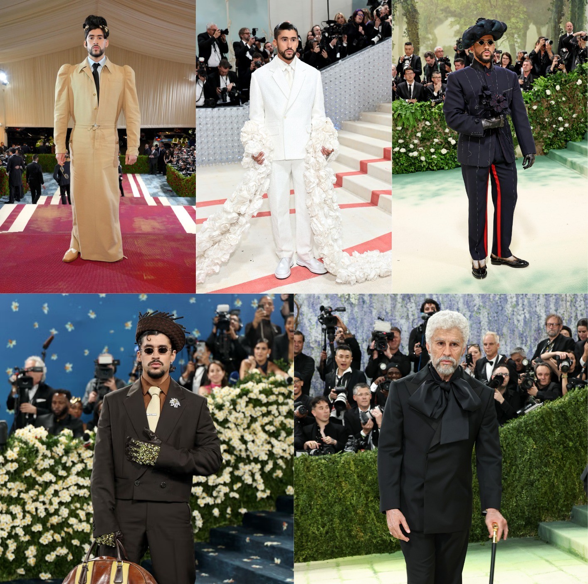
Estos hechos evidencian la figura de el artista como algo que trasciende mucho allá de la industria musical, influyendo en la moda y en las tendencias juveniles, pero, en algo que incluso suena repetitivo en este texto, siempre, siempre, siempre, llevando consigo Puerto Rico y la identidad latinoamericana con él.
Impacto cultural y social: lo que defiende
El papel de Bad Bunny en la industria musical y fashion es indiscutible. Sin embargo, una era no se puede definir por uno o dos aspectos solamente. El evidente talento, la mezcla de géneros, la personalidad artística y calidad de sus contenidos lo llevaron al éxito. Fueron también sus posiciones, críticas y apoyo a causas importantes lo que lo llevó a un nível de ícono, el cual, como todos los demás íconos, atrajo muchas críticas pero también mucho amor de quienes se sienten representados y defendidos.
Él Apagón - Aquí Vive Gente
El videoclip de la canción del álbum Un Verano Sin Ti no se resume solamente a la música. El vídeo en Youtube es un documental de 22 minutos con una serie de críticas a la situación social que Puerto Rico vive. La primera parte del vídeo presenta la canción “El Apagón”, celebrando la cultura del país. Después, el video se transforma en un reportaje de la periodista Bianca Graulau.

Él revela muchos nombres envolvidos y denuncia diversas cuestiones: los frecuentes apagones y deficiencias del sistema eléctrico nacional tras su privatización por EE.UU., el aumento del costo de la vivienda y la gentrificación, que desplaza a residentes locales, la compra de propiedades por inversionistas extranjeros, favorecidos por incentivos fiscales y la pérdida de acceso a playas y espacios públicos para las comunidades puertorriqueñas.
Bunny utiliza su plataforma para traer los focos globales a los problemas de su tierra, reafirmar que Puerto Rico pertenece a los puertorriqueños y motivar la defensa de la identidad, la cultura y los derechos de su pueblo.
Yo Perreo Sola
Otro videoclip que el artista utiliza para dejar un mensaje. Durante el video, Benito interpreta a varios personajes, incluyendo una mujer, que, junto con la letra de la canción, busca transmitir un mensaje de respeto hacia la autonomía de las mujeres.
A lo largo del video, aparecen escenas de baile en una discoteca donde se enfatiza que una mujer puede disfrutar y bailar sola sin ser acosada ni presionada.
El uso de vestuario, maquillaje y actuaciones busca cuestionar los estereotipos de género y llamar la atención sobre el acoso que muchas mujeres enfrentan en espacios de fiesta. Si estos elementos no fueron claro suficientes, al final del vídeo aparece el mensaje: “Si no quiere bailar contigo, respeta. Ella perrea sola.”

Good Bunny Foundation
Fundada por Bad Bunny en 2018, la fundación “trabaja por las futuras estrellas en la música, artes y deportes”. La institución sin fines de lucro realiza diversas acciones en Puerto Rico.
La llamada “Un Verano Contigo” selecciona jóvenes talentosos del sistema público y comunidades especiales de acuerdo con sus méritos académicos, atléticos y artísticos para recibir entrenamiento y talleres con profesionales.
La “Bonita Tradición” es una tradición navideña que obsequia instrumentos musicales, deportivos y materiales de arte a niños y jóvenes de todas las edades del país.
Realizan también un torneo de golf que reúne a la comunidad para un día de deportes y solidaridad. Todo lo recaudado se destina a proyectos que apoyan a niños y adolescentes de Puerto Rico, generando un impacto real en su futuro.
Por fin, la fundación también hace diversos proyectos comunitarios, ya restauró una cancha junto a otra fundación y ofrecen clínicas de baloncesto en diversas comunidades impactando positivamente sobre 200 niños y jóvenes.

Apoyo a Comunidad LGBT+
Siempre que preguntado sobre el asunto, Bad Bunny respondió con mucha naturalidad y consciencia sobre lo que hace de él un “ally” de la comunidad. En una entrevista para ET, reconoció que como un cantante de reggaeton, sentía que su fanbase necesitaba de ese mensaje y educación y sobre cómo era importante hablar sobre las cuestiones que afectan la vida de la comunidad LGTBQIA+.
En otro videoclip “Ignorantes” con Sech, Bunny trató de representar relacionamientos LGBTQIA+ y dijó que era un video sobre amor, entonces iría hablar de amor, porque amor es amor.
Durante una presentación en él programa de televisión “The Tonight Show Starring Jimmy Fallon”, la estrella utilizó una camiseta con las palabras “Mataron a Alexa, no a un hombre con falda”. Alexa Negrón Luciano era una mujer transgénero que fue brutalmente asesinada en Puerto Rico en 2020. Su muerte provocó indignación y muchos debates sobre la transfobia, debates este que Bunny se esforzó para llamar la atención utilizando la camiseta.
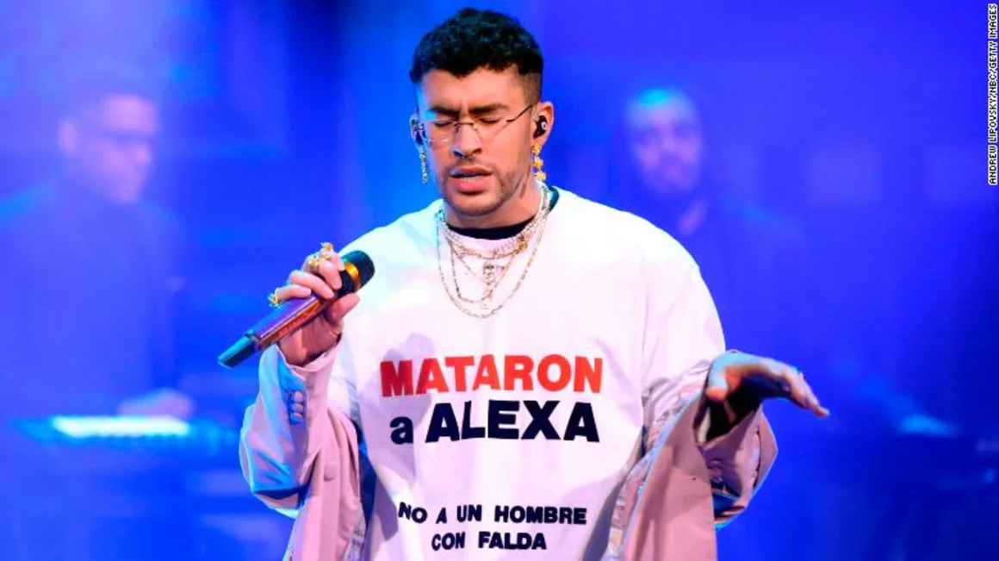
En otra presentación, ahora de “Tití Me Preguntó” en el VMA de 2022, besó a una bailarina y a un bailarín como parte de la coreografía. El gesto fue ampliamente interpretado como un mensaje de inclusión y de desafío a las normas tradicionales sobre la masculinidad.
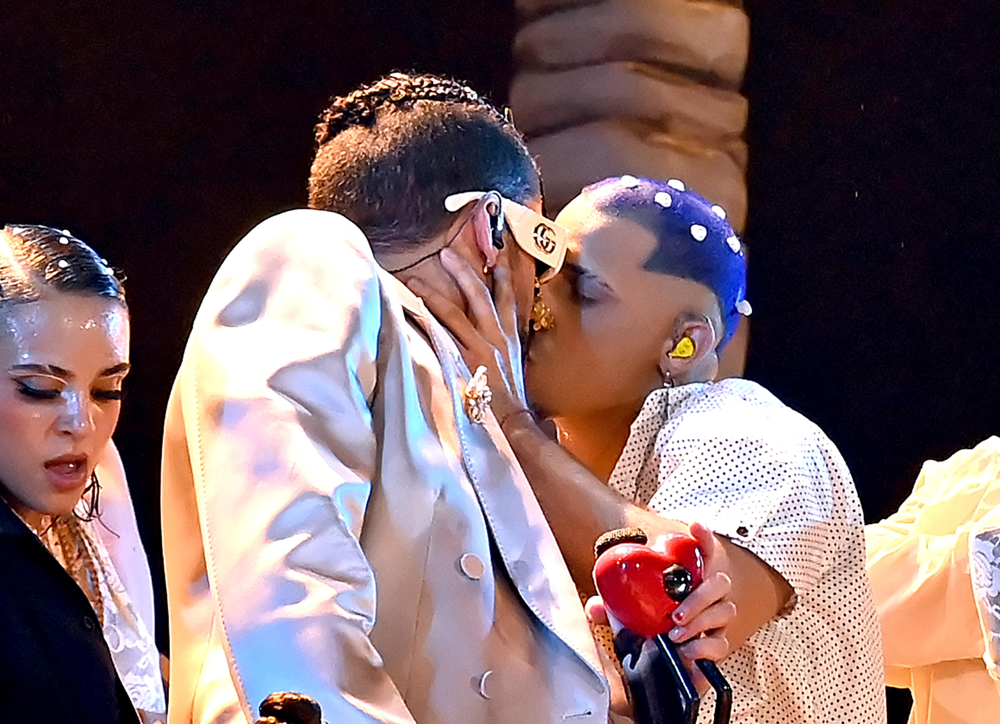
Super Bowl
El Super Bowl Halftime Show de 2026 fue el evento que mejor demostró todo el poder musical y social de Bad Bunny. Se esperaba un espectáculo muy animado y regado de críticas, principalmente por la presentación ser en EE.UU. y sus cuestiones con Puerto Rico, pero lo que Benito hizo trascendió las expectativas generales.
Él se convirtió en el primer artista latino en encabezar en solitario el espectáculo y hizo la presentación casi toda en español, algo sin precedentes en la historia.
Abrió el show con “Tití Me Preguntó” en un escenario que recreaba un campo de caña de azúcar y escenas de Puerto Rico, interpretó sus mayores éxitos e tuvo como invitados especiales a Lady Gaga, quien cantó una versión salsa de su hit “Die With a Smile” y Rick Martin, importante nombre que abrió las puertas del mundo para la música latina con su grupo “Menudos”, que interpretó “"Lo Que Le Pasó a Hawaii”.
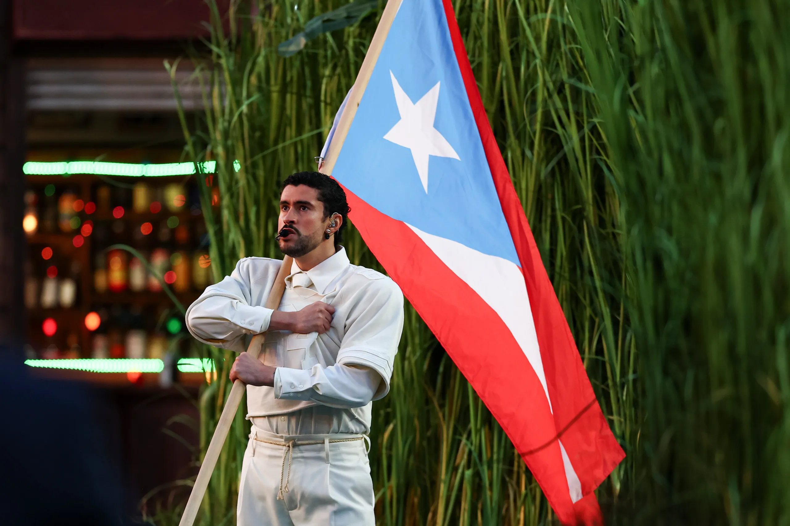
Todo el espectáculo fue un homenaje a Puerto Rico y a la cultura latinoamericana. Incluyó referencias a la vida cotidiana de la isla, la bandera puertorriqueña, el problema del sistema eléctrico durante “El Apagón”, la preocupación que pase a PR lo mismo que pasó a Hawaii (colonización estadounidense) durante la interpretación de Rick Martin y un mensaje de unidad entre los países del continente americano. Al final, Bad Bunny nombró a todos los países de América mientras en las pantallas del estadio, dejaba apareciendo su mensaje:
"The only thing more powerful than hate is love" ("Lo único más poderoso que el odio es el amor")

El legado
Después de conocer todas las razones que han convertido a Bad Bunny en el fenómeno que es hoy, resulta imposible no hablar de su legado.
Su impacto trasciende la música. Ha transformado la moda, la cultura popular y la industria del entretenimiento, inspirando a millones de personas: desde niños que sueñan con dedicarse a la música hasta artistas emergentes y figuras ya consolidadas.
La rapera puertorriqueña Young Miko ha contado en varias entrevistas que trabajar con Bad Bunny fue una de las experiencias más enriquecedoras de su carrera. Ha afirmado que aprendió muchísimo de él y que Benito se convirtió en una inspiración tanto a nivel artístico como personal.
El veterano Ivy Queen, dicho por Bad Bunny como una de sus mayores influencias musicales, ha reconocido públicamente el impacto cultural de Bad Bunny y su disposición para desafiar estereotipos dentro del género urbano.
Por su parte, la también puertorriqueña RaiNao ha destacado que Bad Bunny abrió el camino para una nueva generación de artistas de la isla que se atreven a experimentar con sonidos alternativos y a romper con las fórmulas tradicionales del reguetón. Asimismo, ha resaltado el enorme impacto cultural que ha tenido al representar a Puerto Rico con orgullo en los escenarios más importantes del mundo.
Uno de los mayores logros de Bad Bunny fue demostrar que no era necesario cambiar de idioma para conquistar el mercado global. Siempre defendió que cantar en español era suficiente y nunca sintió la necesidad de ocultar su acento boricua ni sus raíces puertorriqueñas para alcanzar el éxito internacional.
Con ello, transformó la percepción mundial sobre la música latina, la cultura puertorriqueña y el potencial de los artistas hispanohablantes. Contribuyó a consolidar la música latina como un fenómeno verdaderamente global, dejando de ser vista como un género de alcance regional.
Su legado va mucho más allá de los récords, los premios o las cifras de streaming. Se refleja en las puertas que abrió para nuevas generaciones de artistas, en el orgullo cultural que despertó entre los puertorriqueños y en el impacto que sigue teniendo en millones de personas a través de su música, su autenticidad y su compromiso con su comunidad.
Conclusión
Responder a la pregunta central: ¿Por qué vivimos la "Era Bad Bunny"?
Concluir que Bad Bunny representa una nueva etapa para la música latina. Su legado combina innovación musical, reconocimiento internacional e impacto cultural y social, convirtiéndose en una de las figuras más importantes de la actualidad.
Fontes: GQ México, Paper Magazine, Vogue México, Spotify, Billboard, Grammy, Adidas , Calvin Klein, G1, CNN Español Latinoamerica, ET, Variety, Los40